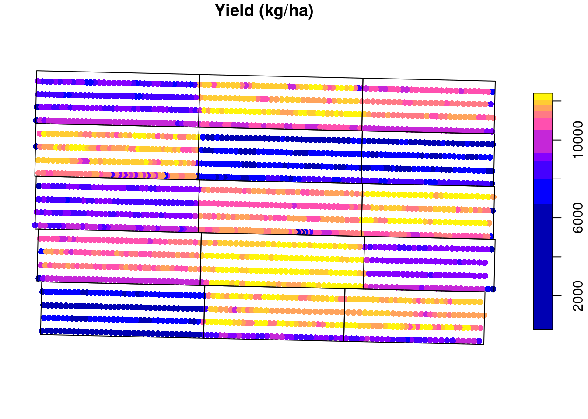

Introduction
In a previous post, I have mentioned that pacu provided support for processing data coming from on-farm trials, as well as production fields. In this post, I want to explore and showcase this functionality a little more in depth. The idea is to provide an example of processing these data and make a few considerations that can greatly impact the end result.
We will look at simulated data from a small on-farm trial. This is made up data and I simulated a relationship between corn yield and nitrogen rate that followed a linear plateau relationship like the image below. The simulated relationship presented an intercept = 7000, slope = 30, and a breakpoint = 180. Let’s process this data and see if we can recover this relationship.
Installing and loading the necessary packages
To install pacu, you can either install the CRAN version:
install.packages('pacu')Or, you can install the development version from GitHub using the remotes package:
remotes::install_github('cldossantos/pacu')Now that we have installed the necessary packages we can load them and continue with our analysis.
library(pacu)
library(sf)
library(nlraa)
library(nlme)Working with the data
Here, we will import the data sets into R. We will use to data sets for this exercise. The first contains made up raw yield data that represents data coming from an on-farm trial. The second contains an example of nitrogen rates applied to each experimental unit.
raw.yield <- read_sf('./raw-data/example-raw-data.shp',
quiet = TRUE)
trial.design <- read_sf('./raw-data/example-trial-design.shp',
quiet = TRUE)Lets take a look at how these two data sets line up in space. In this example, the points represent the yield monitor readings and the red rectangles represent the experimental units. We can see that, in this example, we had about 4 combine passes per experimental unit.
plot(st_geometry(raw.yield), pch = 1, cex = 0.3)
plot(st_geometry(trial.design), border = 'red', add = TRUE)
Another piece of information that can be extracted from the trial.design data set is the amount of nitrogen applied to each experimental unit in this example.
plot(trial.design["nrate"], main = 'Nitrogen rate (kg/ha)')
We can take a look at the raw yield data to see the kind of data we are dealing with. We can see that there is a lot of variability in the yield data, with it ranging from \(\approx 200\) to \(\approx 12000\) kg/ha. Some of this variability comes from the treatment effect but there’s a part of it that is just random variability. The challenge lies in parsing out the treatment effect.
boxplot(raw.yield$yld_kgh,
ylab = 'Yield (kg/ha)')
plot(raw.yield["yld_kgh"],
pch = 16,
main = 'Yield (kg/ha)',
breaks = 'quantile',
reset = FALSE)
plot(st_geometry(trial.design),
add = TRUE)
Cleaning based on standard deviation
Something that is common to do, is to use empirical rules to remove outliers and clean some of the noise inherent to these type of data, let’s see the effect of that.
A pretty common procedure is to clean anything outside of 2 or 3 standard deviations from the mean (you can read more about it here. Let us take a look at this procedure. I will isolate one experimental unit for us to take a closer look. The removed points are marked with a red “X”. For this experimental unit, anything that was smaller tha 5622 or greater than 8139 kg/ha was removed.
## selecting only experimental unit 5
to.keep <- as.numeric(st_intersects(raw.yield, trial.design[5, ]))
one.eu <- raw.yield[!is.na(to.keep), 'yld_kgh']
## calculating the mean and sd
eu.mean <- mean(one.eu[['yld_kgh']])
eu.sd <- sd(one.eu[['yld_kgh']])
## defining upper and lower boundaries and identifying which
## data points to remove
upper.boundary <- eu.mean + 2 * eu.sd
lower.boundary <- eu.mean - 2 * eu.sd
to.remove <- (one.eu$yld_kgh < lower.boundary |
one.eu$yld_kgh > upper.boundary)
## showing which points were removed
plot(one.eu, reset = FALSE,
main = 'Yield (kg/ha)',
pch = 16)
plot(st_geometry(one.eu)[to.remove],
cex = 2,
col = 'red',
pch = 'x',
add = TRUE)
We can now apply this same methodology to all experimental units and see that, in total, we will remove 60 points from this data set.
raw.yield$eu <- as.numeric(st_intersects(raw.yield, trial.design))
raw.yield <- raw.yield[order(raw.yield$eu), ]
to.remove <- ave(raw.yield$yld_kgh,
raw.yield$eu,
FUN = function(x){
eu.mean <- mean(x)
eu.sd <- sd(x)
upper.boundary <- eu.mean + 2 * eu.sd
lower.boundary <- eu.mean - 2 * eu.sd
(x < lower.boundary | x > upper.boundary)
})
to.remove <- as.logical(to.remove)
plot(raw.yield['yld_kgh'],
main = 'Yield (kg/ha)',
reset = FALSE,
pch = 16)
plot(st_geometry(raw.yield)[to.remove],
col = 'red',
pch = 'x',
add = TRUE)
Now, let us remove these data points, and average the yield observations within each experimental unit. We can see that our estimates of the model parameters are not quite the same ones that we simulated. In addition, the variance of the parameter estimates is pretty large. This means that we are not very certain of these values.
yield.filtered.sd <- raw.yield[!to.remove, ]
mean.yield.sd <- aggregate(yield.filtered.sd['yld_kgh'],
trial.design,
FUN = mean)
mean.yield.sd <- st_join(mean.yield.sd, trial.design, join = st_equals)
plot(mean.yield.sd$nrate, mean.yield.sd$yld_kgh,
xlab = 'Nitrogen rate (kg/ha)', ylab = 'Yield (kg/ha)')
fit1 <- nls(yld_kgh ~ SSlinp(nrate, a, b, xs),
data = mean.yield.sd)
# estimates
coef(fit1) a b xs
6814.09790 28.01518 168.74310 # variances
diag(vcov(fit1)) a b xs
28833.979455 3.075624 71.175162 Adding a buffer to the experimental units
Another empirical cleaning method that is commonly used is to add a buffer to the experimental units. This in meant to remove some of the border effect or the transition between experimental units. However, adding a buffer needs to be done with caution. You want you buffer to be big enough to remove some of these potentially problematic points, but you do not want your buffer to remove so many points that you will end up estimating the mean with fewer points. This would increase the uncertainty of your estimate. Let’s take a look at different buffer sizes:
buffers <- c(1, 2, 5, 10)
cols <- hcl.colors(4, palette = 'Temps')
plot(st_geometry(raw.yield), cex = 0.5)
for (i in 1:length(buffers)){
buffered.exp.units <- st_as_sf(st_buffer(trial.design, -buffers[i]))
plot(st_geometry(buffered.exp.units), border = cols[i], add = TRUE)
}
legend('topleft',
fill = cols,
legend = buffers,
title = 'Buffer size (m)')
It seems that a buffer size of about 5 meters is what we want. Let’s go with that and see which observations will be removed from the data set:
buffered.exp.units <- st_as_sf(st_buffer(trial.design, -5))
raw.yield$eu <- as.numeric(st_intersects(raw.yield, buffered.exp.units))
raw.yield <- raw.yield[order(raw.yield$eu), ]
to.remove <- ave(raw.yield$yld_kgh,
raw.yield$eu,
FUN = function(x){
eu.mean <- mean(x)
eu.sd <- sd(x)
upper.boundary <- eu.mean + 2 * eu.sd
lower.boundary <- eu.mean - 2 * eu.sd
(x < lower.boundary | x > upper.boundary)
})
to.remove <- as.logical(to.remove)
plot(raw.yield['yld_kgh'],
main = 'Yield (kg/ha)',
reset = FALSE,
pch = 16)
plot(st_geometry(raw.yield)[to.remove],
col = 'red',
pch = 'x',
add = TRUE)
Now, let us remove these data points, and average the yield observations within each experimental unit. We can see that our estimates of the model parameters are a little closer to the true values but still not quite there. Also, the variance has decreased quite a bit.
yield.filtered.buffer <- raw.yield[!to.remove, ]
mean.yield.buffer <- aggregate(yield.filtered.buffer['yld_kgh'],
trial.design,
FUN = mean)
mean.yield.buffer <- st_join(mean.yield.buffer, trial.design, join = st_equals)
plot(mean.yield.buffer$nrate, mean.yield.buffer$yld_kgh,
xlab = 'Nitrogen rate (kg/ha)', ylab = 'Yield (kg/ha)')
fit2 <- nls(yld_kgh ~ SSlinp(nrate, a, b, xs),
data = mean.yield.buffer)
## estimates
coef(fit2) a b xs
6659.5802 30.3704 172.9306 ## variances
diag(vcov(fit2)) a b xs
6649.190326 0.709247 14.583390 We get a little closer to the true value with every layer of processing that we include in this exercise. However, these layers are empirical and somewhat arbitrary. By adding a buffer zone, we are looking to remove points that have an influence from the adjacent experimental units. This can be done using the ritas algorithm within pacu.
Using pa_yield
The pa_yield function has built-in capabilities to automate these processes without the need for these empirical rules. For instance, by setting remove.crossed.polygons to TRUE, we remove data that could be influenced by adjacent experimental units.
So we can visualize these steps, I will set the option steps to TRUE. This is a new addition to the package and is not yet available on CRAN. Please install the package from GitHub to be able to use this.
yld3 <- pa_yield(raw.yield,
data.columns = c(mass = 'mass_g',
interval = 'intrvl_',
distance = 'dstnc_f',
width = 'swth_ft',
angle = 'angl_dg',
moisture = 'moistur'),
grid = trial.design,
steps = TRUE,
algorithm = 'ritas',
unit.system = 'metric',
verbose = FALSE,
remove.crossed.polygons = TRUE,
cores = 5)
yld4 <- st_join(yld3$yield, trial.design, join = st_equals)
yld4$yield_kgh <- yld4$yield * 1000
fit3 <- nls(yield_kgh ~ SSlinp(nrate, a, b, xs),
data = yld4)
## estimates
coef(fit3) a b xs
6997.17524 30.40087 176.09137 ## variances
diag(vcov(fit3)) a b xs
1401.4136937 0.1494841 3.1692490 Conclusion
In this exercise, we have seen how different decisions about data processing can affect the estimates we get from the data. We have also seen how we can use the pa_yield() function to process the yield data coming from agronomic trials. The differences in the precision of the estimates are really important when we want to estimate confidence intervals or investigate whether a certain covariate has an effect. For instance, let’s say that, in addition to nitrogen rates, we also had nitrogen source. More precise estimates would increase the power of our analysis to find differences.